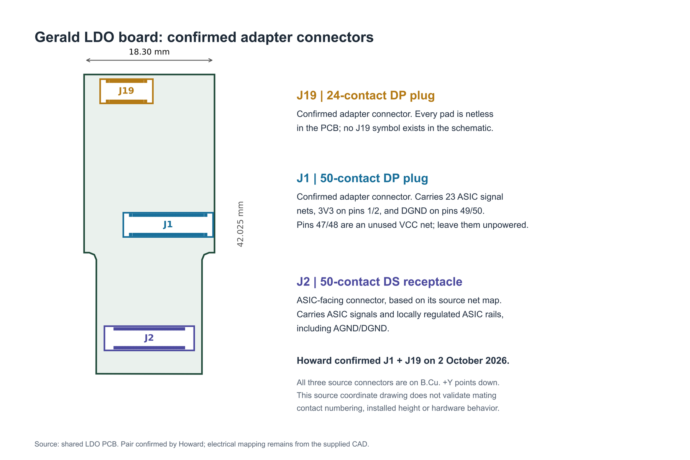

Recorded review · 2 October 2026
Build the one-chip backup first.
Howard, Zitong and Gerald agreed to reuse the existing LDO board and connect it directly to XEM8305 through a rigid adapter. The custom FPGA board remains the primary architecture.
01 / Overview
Work order
- Start with one chip. Reuse Gerald's existing LDO/routing board and single-chip setup. Build the adapter that replaces the SpikeGadgets FPGA layer; a new LDO board is not needed for this first test.
- Review the main FPGA in parallel. Check V11's schematic, components and interface assumptions while the backup is prepared. Submit the main board only after its design and release checks pass.
- Scale after the first result. Test the assembled one-chip backup, then develop the eight-chip version while the main FPGA board is being fabricated. One-chip success does not prove eight-chip capture.
This meeting set the development order. It did not record a completed hardware test or a fabrication release.
02 / PCB status
Keep both paths moving
| Workstream | Direction and next check |
|---|---|
| ASIC / carrier | Use the existing one-chip setup first. Gerald supplies the board/interface information and reviews ASIC operation. |
| Routing / LDO | Reuse the existing LDO board. Keep the new adapter compact and match its existing connector positions. |
| Main FPGA | Review V11 over the weekend. Move toward a 35T CSG325 candidate after exact part and procurement checks; this record does not substitute a part in native CAD. |
| Downstream / PC | XEM8305 is the backup FPGA/USB module. Define the carrier supplies, pin assignments, firmware and host capture. |
03 / Interfaces
J1 and J19 are the adapter pair.

Howard confirmed J1 + J19 after reviewing this generated source-coordinate drawing. It does not validate mating contact numbering or installed heights.
First backup: existing chip setup → existing LDO board → rigid J1/J19 adapter → XEM8305 → USB → PC. No cable between the adapter and module is proposed for this first version.
Technical audit after the meeting
- LDO source: all three connectors are on B.Cu. J1 carries 23 ASIC signal nets, 3V3 input on pins 1/2 and DGND on pins 49/50. J19 has no electrical nets and no schematic symbol; no functions have been assigned to it.
- Supply/return: J1's VCC pins 47/48 are unused. AGND and DGND are separate in the supplied CAD. Review the actual LDO supply and return arrangement before powering the adapter.
- XEM8305 carrier power: VCCO is supplied externally and sequenced after onboard power is good. 1.5 V is within the supported bank ranges. The carrier needs a reviewed supply circuit even when ASIC signals are routed directly. Official power requirements ↗
04 / Decisions
Main-board choices to close
- 35T direction: use the same CSG325 package class, pending exact part number, speed/temperature grade, compatibility and procurement confirmation. Reported stock remains unverified here.
- One 125 MHz LVDS oscillator: check its actual receiver, electrical interface and generated-clock/timing plan. Phase jitter and cycle-to-cycle jitter are different specifications.
- 128 Mbit boot flash: this is 16 MB, not 128 MB. Check flash voltage, configuration-bank voltage and translation from the exact datasheets.
- Commands and stimulation: review serialization with Jiao. Local ASIC clock/data/latch generation and a defined stimulation trigger are still required. Confirm startup and loss-of-link behavior.
- Micro-HDMI pin 1: its replacement use and the programming/reference arrangement remain open. The discussion did not finalize a new pin map.
05 / Actions
Quick to-do for Tuesday, 6 October
| Action | Working owner / reviewer | Status / timing |
|---|---|---|
| Check J1/J19 mates and the one-chip signal map; place XEM8305 connectors from its official drawing. | Howard + Zitong; Gerald reviews LDO interface | Pair confirmed; bring proposal on 6 October. Mating verification open. |
| Define XEM8305 VCCO sequencing and existing LDO supply/return connections. | Howard + Zitong; Gerald supplies setup details | Open; before routing release. |
| Review V11, 35T exact part, oscillator/flash interfaces and regulator choices. | Howard + Zitong | Weekend of 3–4 October; review 6 October. |
| Check command protocol, local ASIC controls and stimulation trigger. | FPGA owner with Jiao + Gerald | Open; implementation ownership to confirm. |
| Assemble and test one chip; then assess eight-chip scaling. | Integration team; Gerald reviews ASIC operation | Planned after fabrication/assembly; no result recorded. |
Working follow-ups do not imply accepted layout ownership or review approval. Keep Gerald's existing-board source unchanged and record new design revisions separately.
06 / Sources
Conversation and source audit
Meeting date: 2 October 2026. This page summarizes the conversation supplied by Howard and his subsequent connector confirmation. The full conversation remains private. The technical audit uses the LDO ZIP shared that day and official Opal Kelly documentation; it is separate from meeting decisions.
Older presentations retain their dated architecture and CAD status. This record updates the working sequence and backup direction; native CAD and existing evidence files are not replaced.